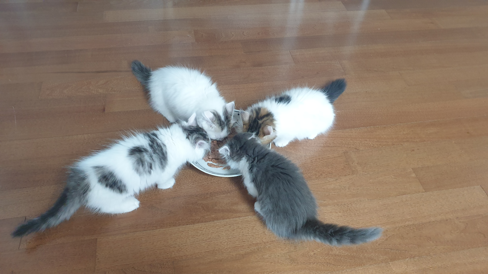

청이와 라이의 홈페이지에 오신 것을 환영합니다.
청이와 라이는 2020년 4월 17일에 태어났습니다.
청이와 라이는 자매입니다.
아래 그림에서 청이와 라이를 찾아보세요.

청이와 라이의 이름이 어떻게 지어졌는지 궁금하시다구요?
청이와 라이가 태어난 곳에 힌트가 있습니다.
청이와 라이는 인천의 '청라'에서 태어났습니다.
'청라'의 한 글자씩을 따서 청이, 라이가 된 것입니다.